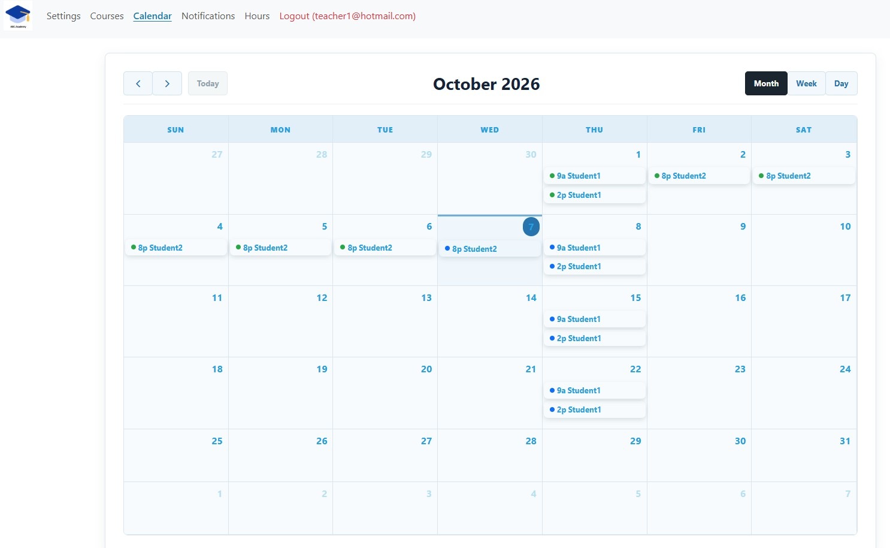
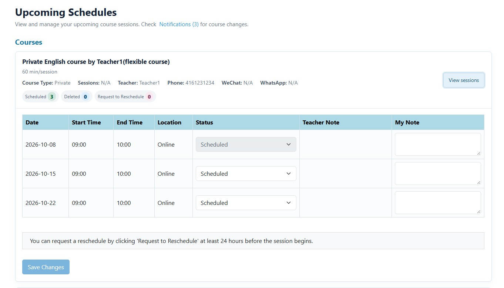
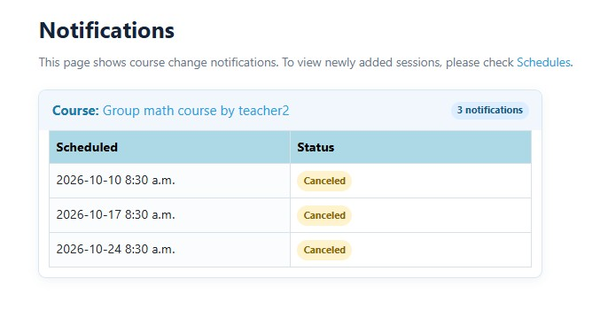

Simplify Tutoring Scheduling
Keep lessons, schedule changes, and student updates organized in one place.
Managing a few lessons is easy.
But as your tutoring business grows, schedules can quickly become harder to manage. Students need to move lessons. Plans change. Classes get canceled. Make-up lessons need to be remembered.
And suddenly, important details are scattered across messages, calendars, and notes.
ClassLift helps keep tutoring schedules and session changes organized — so you can spend less time managing lessons and more time teaching.
See Your Teaching Schedule at a Glance
When you are teaching multiple students, you should not have to check different conversations just to figure out what is happening today.
ClassLift gives teachers a clear calendar view of upcoming sessions across their students.

Whether you are planning ahead or checking today’s lessons, you can quickly see what is coming up and keep your teaching schedule organized.
Give Students a Clear View of Their Lessons
Students should not have to message you just to ask, “When is my next class?”
With ClassLift, students can view their upcoming lessons and important course information from their own account.

That gives students a reliable place to check their schedule while reducing routine scheduling questions for teachers.
Make Schedule Changes Easier
Tutoring schedules change. That is normal.
School events come up. Work schedules shift. Families travel. Sometimes a lesson simply needs to move.
The difficult part is not changing one lesson — it is keeping everyone on the same page afterward.
ClassLift helps teachers and students manage changes around upcoming sessions without relying entirely on back-and-forth messages.
Schedule changes stay connected to the lesson they belong to, helping reduce confusion about which session needs attention.
Keep Everyone Informed
Changing a schedule only works when everyone knows about it.
ClassLift helps students stay aware of updates to their courses and upcoming sessions, giving them a clear place to check when plans change.

And when cancellations or make-up lessons happen, ClassLift helps keep those changes organized so they are easier to follow.
Less Scheduling. More Teaching.
Your scheduling system should make teaching easier — not create another administrative job.
ClassLift keeps your lessons, schedule changes, and student updates organized in one place.
Spend less time figuring out what is happening next.
Spend more time helping students move forward.
Ready to simplify your tutoring business?